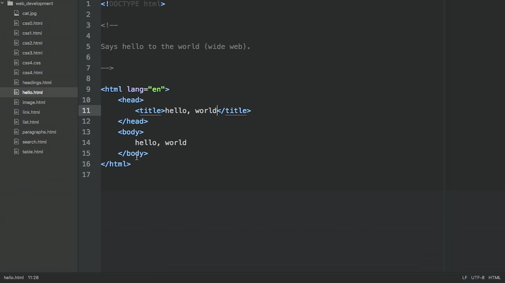
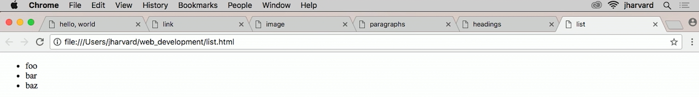
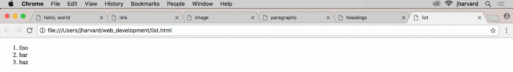
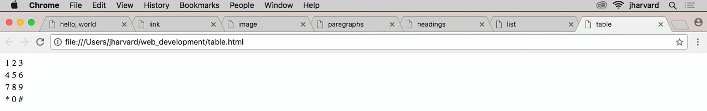
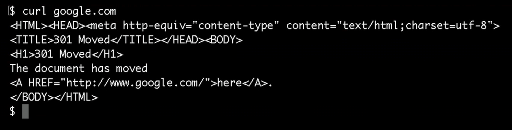
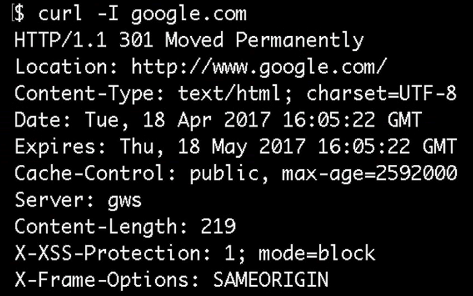
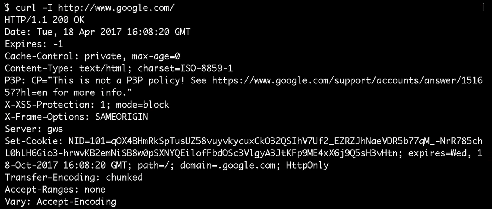
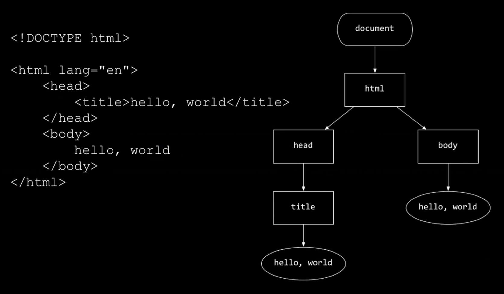

Web Development
by Spencer Tiberi
互联网 Recap
- All the computers on the 互联网 are interconnected that supports HTTP and TCP/IP
- The 互联网 is an infrastructure to get data from a server to a client
- Supports emails, 视频 conferencing, etc.
- The web is one specific application or service that runs atop the 互联网
- Assumes an 互联网 exists to get data from point A to point B
- Layers functionality that allows us to click, browse, etc.
- Assumes an 互联网 exists to get data from point A to point B
Web Browser
- Web browsers are found on phones, computers, and game consoles
- They have a space to enter a URL (Uniform 资源 Locator)
- Prefixed by
http://orhttps://
- Prefixed by
- When typing in a URL, you’re sending a request from your device to some remote server
- The server looks 在 your request and figures out how to respond
- Like when we 上一页 requested cat images!
Web Server
- A computer that has a CPU, RAM, and a hard drive
- Rack servers
- Sized so they can be stacked
- Odds are your company has many of these if they have a web server
HTTP
- We send requests to web servers
- Language of these requests is HTTP (Hypertext Transfer Protocol)
- Request:
GET /cat.jpg HTTP/1.1-
1.1refers to HTTP language 1.1
-
- Response by the server:
HTTP/1.1 200 OK- This literally means that everything was okay with the request
HTTP Status Codes
| Code | Status | Meaning |
|---|---|---|
| 200 | OK | Everything is OK |
| 301 | Moved Permanently | Browser should redirect to 新内容 地点 |
| 302 | Found | Browser should redirect to 新内容 地点 |
| 304 | Not Modified | Browser will cache files if things don’t change to save 时间/bytes from requests |
| 401 | Unauthorized | Not authorized to view content; Could require login |
| 403 | Forbidden | Not able to view content |
| 404 | Not Found | The requested data could not be found because it doesn’t exist on the server |
| 500 | Internal Service Error | Not your fault; The server erred |
HTML
- In addition to the HTTP headers that include status codes, the bits representing an image or website will be sent to you
- The language that builds websites is HTML (Hypertext Markup Language)
- Sent as a response for a request for a web page
- HTML isn’t a 编程 language but rather a markup language
-
Allows you to format, but doesn’t have control flow such as loops and conditions
<!DOCTYPE html> <html lang="en"> <head> <title>hello, world</title> </head> <body> hello, world </body> </html>- 这是 HTML for a webpage that says “你好, 世界”
-
- To implement webpages, you need to write HTML
- Editors like Atom and Sublime Text exist to help write HTML
- Ultimately, all you need is a computer, a keyboard, and some way of typing out text!
- Editors like Atom and Sublime Text exist to help write HTML
-
<!DOCTYPE html>- Lets the browser know the following file is written in HTML 5
-
<html lang="en">- Specifies that the webpage is written in English
-
<head></head>- 示例 of 打开 and 关闭 tags
- First tag opened is the last tag closed
- HTML is a tag-based markup language
- Tags have attributes
- HTML is a tag-based markup language
- Standard extension for a webpage is .HTML
- David clicks the 你好.HTML file and loads the page
- In the top corner of the browser tab is the title
- This comes from the
head
- This comes from the
- The
bodycontains 99% of the webpage’s content - This page is a local document, so the address is where David saved it
- Not on a web server, so no one else can access it
- In the top corner of the browser tab is the title
- There are web hosts to serve up websites we write
- We can also buy our own domain 姓名
Atom
- TextEdit is not designed for web page development
- Free alternatives made for web development exist
- Atom is an 示例 of one of these editors

- Fun fact: these 笔记 were indeed created on Atom!
- In Atom, you can 打开 multiple files 在 once
- Colors are added for 可读性
- These colors don’t effect how the webpage will render
- HTML supports comments
- To help colleagues who look 在 your code know your intentions of the code
Links
- Links can make our pages 更多 dynamic by linking to other pages
-
<a></a>are anchor tags that can be used for links
<!DOCTYPE html> <html lang="en"> <head> <title>link</title> </head> <body> Visit <a href="http://www.harvard.edu/">Harvard</a>. </body> </html> -
- href (hyper reference) is set to where you want the link to go
- Blue, underlined text traditionally represents a link on a webpage
- The bottom left corner on Chrome shows the destination of a link when you hover over the text
- A link traditionally becomes purple if you’ve already followed that link
- Browser remembers where you’ve been
- Potential 隐私 concern
- Browser remembers where you’ve been
Images
- The web is filled with images
-
<img/>is the image tag
<!DOCTYPE html>
<html lang="en">
<head>
<title>image</title>
</head>
<body>
<img alt="Grumpy Cat" src="cat.jpg"/>
</body>
</html>
- The
src(source) attribute is set to the address of the file - The
alt(alternative text) attribute is what displays if the page can’t be seen - Closes itself as one tag
Paragraphs
- Even if you add spaces to format paragraphs, HTML will render without them!
- When looking 在 your webpage you can “view page source” on your browser to see the original HTML with your spaces, but the webpage still doesn’t have these spaces
- The browser will only do what HTML tells it to do
- The browser needs instructions in the form of HTML tags
- Paragraph tags (
<p></p>) tell the browser to create a paragraph of text
Headings
-
<h1></h1>are the heading 1 tags - There also exists
<h2></h2>,<h3></h3>,<h4></h4>,<h5></h5>, and<h6></h6> - Headings get smaller the larger the number
- These make the font larger for usage similar to marking chapters in a book
Lists
- Unordered lists
- Use bullets (like these!)
<ul></ul>
-
<li></li>are list item tags
<!DOCTYPE html>
<html lang="en">
<head>
<title>unordered list</title>
</head>
<body>
<ul>
<li> foo </li>
<li> bar </li>
<li> baz </li>
</ul>
</body>
</html>

- Ordered lists
- Use numbers
<ol></ol>
<!DOCTYPE html>
<html lang="en">
<head>
<title>ordered list</title>
</head>
<body>
<ol>
<li>foo</li>
<li>bar</li>
<li>baz</li>
</ol>
</body>
</html>

Tables
-
<table></table>are table tags that create a table-
<tr></tr>are table row tags -
<td></td>are table data tag- Like columns or cells
-
<!DOCTYPE html>
<html lang="en">
<head>
<title>table</title>
</head>
<body>
<table>
<tr>
<td>7</td>
<td>8</td>
<td>9</td>
</tr>
<tr>
<td>4</td>
<td>5</td>
<td>6</td>
</tr>
<tr>
<td>1</td>
<td>2</td>
<td>3</td>
</tr>
<tr>
<td>*</td>
<td>0</td>
<td>#</td>
</tr>
</table>
</body>
</html>

Implementing Google
- When you type google.com your browser adds “https://www.” to the beginning of the URL
- As is needed to surf the web
-
curlis a command ran in the terminal that behaves much like a browser- It sends a request like a browser and shows what HTML is returned

- Capital letter tags are a bit dated
- Shows google.com is located 在 http://www.google.com

- The
-Iflag tellscurlto return HTML headers- Includes status codes and other info humans normally don’t see
- Google’s server has been configured to redirect users to http://www.google.com
- UTF-8 is unicode characters
-
curl http://www.google.comreturns a webpage that includes HTML and JavaScript
- It sends a request like a browser and shows what HTML is returned
- Searching for cats changes the URL to https://www.google.com followed by a large sequence of characters
- Distilling this URL to https://www.google.com/搜索?q=cats leads to the same results
- We can “create” a 搜索 engine using this info!
- Distilling this URL to https://www.google.com/搜索?q=cats leads to the same results
Forms
-
<form></form>are form tags that take attributes for an action and a method
<!DOCTYPE html>
<html>
<head>
<title>search</title>
</head>
<body>
<form action="https://www.google.com/search" method="get">
<input name="q" type="text"/>
<input type="submit" text="Search"/>
</form>
</body>
</html>
-
action="https://www.google.com/search" method="get"means “get me https://www.google.com/搜索” - Inside the form, we can have
<input/>tags- These can have 姓名, type, value, and text attributes
- This implementation punts the searching to Google
- The browser uses the HTML form to assemble a URL
https://www.google.com/search?q=cats
-
?in the URL means “Hey Server! Here comes my HTTP parameters!”- A URL 五月 have multiple parameters separated by
&
- A URL 五月 have multiple parameters separated by
css0.HTML
- Let’s make our webpages 更多 pretty
- CSS (Cascading Style Sheets) allows us to style our webpages
- In contrast, HTML allows us to structure our webpages
<!DOCTYPE html>
<html lang="en">
<head>
<title>css0</title>
</head>
<body>
<header style="font-size: large; text-align: center;">
John Harvard
</header>
<main style="font-size: medium; text-align: center;">
Welcome to my home page!
</main>
<footer style="font-size: small; text-align: center;">
Copyright &%169; John Harvard
</footer>
</body>
</html>
- Here, inside
body, we have three tags:<header></header>,<main></main>, and<footer></footer>- They include style attributes written in CSS
- These are written as key-value pairs
- In CSS, there is a property called
font-size- CSS supports
small,medium,large, and exact sizes such as16px
- CSS supports
-
text-align: center;centers the text
- They include style attributes written in CSS
- This 示例 has some redundancy
DOM
- CSS supports the notion of a hierarchy

- Rectangles here represent HTML tags or elements
- Ovals represent text values
- 这是 called a tree in 计算机科学, much like a family tree
- When a browser receives a webpage, it builds a tree-like data structure in your computer’s RAM
- Thus, in this case
header,main, andfooterare all child nodes of of the parent nodebody
css1.HTML
- We can put the
text-align: center;attribute on thebodyelement so it will pass it on to its children (header,main, andfooter)
<!DOCTYPE html>
<html lang="en">
<head>
<title>css1</title>
</head>
<body style="text-align: center;">
<header style="font-size: large;">
John Harvard
</header>
<main style="font-size: medium;">
Welcome to my home page!
</main>
<footer style="font-size: small;">
Copyright &%169; John Harvard
</footer>
</body>
</html>
- 这是 better design as we can change all the text alignment 在 once
css2.HTML
- Combining HTML and CSS is generally frowned upon
- Makes it hard to collaborate
- One person can work on content (HTML)
- The other on style (CSS)
<!DOCTYPE html> <html lang="en"> <head> <style> .centered { text-align: center; } .large { font-size: large; } .medium { font-size: medium; } .small { font-size: small; } </style> <title>css2</title> </head> <body class="centered"> <header class="large"> John Harvard </header> <main class="medium"> Welcome to my home page! </main> <footer class="small"> Copyright &%169; John Harvard </footer> </body> </html>-
<style>can be a tag as well as an attribute -
.centereddefines a class namedcentered- Anything with this class with have the style attribute
text-align: center;
- Anything with this class with have the style attribute
css3.HTML
- We can even get rid of class attributes to further separate style from content
<!DOCTYPE html>
<html lang="en">
<head>
<style>
body
{
text-align: center;
}
header
{
font-size: large;
}
main
{
font-size: medium;
}
footer
{
font-size: small;
}
</style>
<title>css3</title>
</head>
<body>
<header>
John Harvard
</header>
<main>
Welcome to my home page!
</main>
<footer>
Copyright &%169; John Harvard
</footer>
</body>
</html>
- We can also give the tags CSS directly
- Will look identical, but better design
css4.HTML
- What if we remove the style altogether and store it elsewhere?
<!DOCTYPE html>
<html lang="en">
<head>
<link href="css4.css" rel="stylesheet"/>
<title>css4</title>
</head>
<body>
<header>
John Harvard
</header>
<main>
Welcome to my home page!
</main>
<footer>
Copyright &%169; John Harvard
</footer>
</body>
</html>
- We have boiled the HTML down to its essence
- No usage of style tags
- 笔记 the
<link/>tag with ahrefattribute ofcss4.cssand arel(relationship) attribute ofstylesheet- This says “Hey Browser! Please link my stylesheet css4.CSS to this page!”
- In the same directory, we will have this stylesheet
body
{
text-align: center;
}
header
{
font-size: large;
}
main
{
font-size: medium;
}
footer
{
font-size: small;
}
- We have factored out the style to its own file
- Easier for collaboration and sharing
- Can use on multiple HTML pages
- Can create different themes
Closing Thoughts
- Web development is 关于 writing code
- Specifically, HTML, which builds the structure of a webpage
- CSS allows us to fine tune the webpage’s aesthetics
- You can use these building blocks to further learn 关于 web development on your own!
- The underlying concepts are 更多 important than details
- A webpage is nothing 更多 than a text file written in HTML, CSS, and maybe some JavaScript
- This file can be uploaded to a server to put on the 互联网
- You can sign up for a web host with data centers
- All your files will go in a folder on the server so that the webpage can be accessed on the 互联网
- You can also buy a domain 姓名 and configure it to point to the web host
- This file can be uploaded to a server to put on the 互联网
- A webpage is nothing 更多 than a text file written in HTML, CSS, and maybe some JavaScript
- These building blocks are what allow you to put your content on the 互联网!